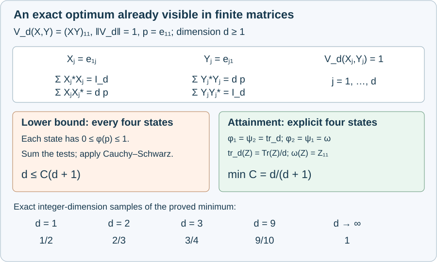

Bilinear state bounds and sharp finite matrix examples
A bounded bilinear form on two C*-algebras can be controlled by four states and two quadratic expressions. The coefficient one in that theorem is universal. For a particular form on \(d\)-by-\(d\) matrices, however, the best coefficient is exactly \(d/(d+1)\). We prove both bounds on that finite-dimensional coefficient, construct states attaining it, and use these examples to explain the universal endpoint.
The general theorem and its intermediate tensor and interpolation arguments have complete proofs in earlier programme lessons. The final section gives their exact locations for every numbered mathematical item in Takesaki III, XV.4. We also make explicit the residual term that must be retained in the source's truncation calculation.
The four-state theorem and its normalization
For a bounded complex bilinear form \(V:A\times B\to\mathbb C\), put
\[ \|V\|=\sup_{\|x\|,\|y\|\le1}|V(x,y)|. \]For nonzero C*-algebras \(A,B\), there are states \(\varphi_1,\varphi_2\) on \(A\) and \(\psi_1,\psi_2\) on \(B\) such that
\[ \begin{aligned} |V(x,y)|&\le\|V\|\,s(x)^{1/2}t(y)^{1/2},\\ s(x)&=\varphi_1(x^*x)+\varphi_2(xx^*),\\ t(y)&=\psi_1(y^*y)+\psi_2(yy^*). \end{aligned} \tag{BIL.1} \]The four states are fixed for all \(x,y\). They may depend on \(V\). Neither algebra needs a unit, a trace, nuclearity or a separable representation. If one algebra is zero, the form is zero and the numerical bound is vacuous; there is no state of norm one on a zero algebra.
The full proof is Theorem 1.1 and Sections 2–7 of the sharp bilinear lesson. Its starting bound is proved in the tensor-completion lesson, Theorem 6.1, using the completed random lift, Theorem 5.1. These are earlier programme proofs, rather than references replacing the required argument. Their exact statements and qualifications are set out below.
For comparison with particular forms, call \(C\ge0\) admissible for \(V\) when four states satisfy
\[ |V(x,y)|\le C\|V\|\sqrt{s(x)t(y)} \quad\hbox{for every }x,y. \tag{BIL.2} \]The theorem gives admissibility of \(1\). It does not say that \(1\) is the least coefficient for every form.
The tensor and interpolation proof mechanisms
Write
\[ q(x)=\frac{x^*x+xx^*}{2},\qquad R(x)=\Big\|\sum_jx_j^*x_j\Big\| +\Big\|\sum_jx_jx_j^*\Big\|. \]The symmetric tensor norm is the infimum of \(\|\sum_jq(x_j)\|^{1/2}\|\sum_jq(y_j)\|^{1/2}\) over finite decompositions \(u=\sum_jx_j\otimes y_j\). Proposition 1.1 in the random-lift lesson proves nondegeneracy, the triangle inequality, invariance under adjoints, the self-adjoint decomposition formula, and the product estimate with coefficient \(4\). It compares this norm to the projective norm without identifying the two completions in advance.
Here is the residual identity needed for that lift. If \(h_\tau\) clips a real scalar to \([-\tau,\tau]\), put \(e_\tau(t)=t-h_\tau(t)\). For self-adjoint random sums \(X,Y\),
\[ \begin{aligned} X\otimes Y &=h_\tau(X)\otimes h_\tau(Y)\\ &\quad+e_\tau(X)\otimes Y +h_\tau(X)\otimes e_\tau(Y). \end{aligned} \tag{BIL.3} \]This is an algebraic identity: substitute \(X=h_\tau(X)+e_\tau(X)\) in the first factor, and split \(Y\) only in the term with first factor \(h_\tau(X)\). In particular the residual contains \(e_\tau(X)\otimes e_\tau(Y)\). Replacing the full \(Y\) in its first term by \(h_\tau(Y)\) would lose this term. The printed residual in the proof of Takesaki III, Lemma XV.4.8, p.193, makes that replacement. Equation (BIL.3), used in the programme's Lemma 4.1, is the required correction.
The random-lift proof estimates the retained projective cost by \(27M/16\) and the symmetric residual by \(2M/3\), where \(M\) is an arbitrarily close balanced decomposition cost. Iteration on a completed residual retains its algebraic-approximation error at every step. It gives lifts with cost at most \(81\|u\|_\sigma/16+\varepsilon\). A separate kernel argument in the tensor-completion lesson proves that the projective-to-symmetric map is injective, including nonunital algebras. Uniqueness then turns the approximate lift costs into the exact norm comparison. No convergent subsequence of bounded projective lifts is assumed.
For a complex form, the resulting initial four-state coefficient is \(C_0=(81/16)\|V\|\), with the norm factor absorbed into \(C_0\). The sharp lesson proves that any such coefficient improves to
\[ C_{n+1}=\sqrt{C_n\|V\|},\qquad C_n=\|V\|\left(\frac{81}{16}\right)^{2^{-n}}. \tag{BIL.4} \]Its polar-power curves belong to the original algebra and are norm holomorphic on the right half-plane. The scalar strip estimate is proved there from local power series and rectangle maxima. Finite independent third roots of unity reproduce all moments needed through degree four; averaging \(V(X,Y)\) uses conjugate phases in \(Y\). The resulting family bound and compact affine state selection give four new states after each improvement. Compactness at the limit gives one quadruple at \(\|V\|\).
The nonunital proof builds a bilinear extension to forced unitizations with exactly the same norm, using two-sided positive approximate identities and the projective dual ball. Restrictions of the resulting states are positive contractions; normalizing a nonzero restriction, or replacing a zero one by a state of the nonzero algebra, only enlarges the positive quadratic expressions. These steps are all part of the linked proof.
A matrix form and the elementary estimates
Fix an integer \(d\ge1\). Use the usual inner product \(\langle r,c\rangle=\sum_j\overline{r_j}c_j\) on \(\mathbb C^d\), and the induced operator norm on \(M_d(\mathbb C)\). Let \(e_{ij}\) be the matrix unit and set
\[ p=e_{11},\qquad \omega(X)=X_{11},\qquad \operatorname{tr}_d(X)=\frac1d\sum_{j=1}^dX_{jj}. \]A state here means a positive linear functional with value one at \(I_d\). Both \(\omega\) and \(\operatorname{tr}_d\) are states: their values on \(Z^*Z\) are, respectively, the squared norm of its first column and the sum of all squared entry moduli divided by \(d\); both take value one at the identity.
For completeness, scalar Cauchy–Schwarz follows from \(\|r-\lambda c\|^2\ge0\): if \(c\ne0\), minimize in \(\lambda\), and if \(c=0\) the inequality is immediate. Thus
\[ |\langle r,c\rangle|\le\|r\|\|c\|. \]Also \(\|z\|=\sup_{\|v\|\le1}|\langle v,z\rangle|\), with equality at \(v=z/\|z\|\) for \(z\ne0\). Consequently \(\|X^*e_1\|\le\|X\|\), by testing \(\langle Xv,e_1\rangle\), and \(\|Ye_1\|\le\|Y\|\) directly.
Define the bilinear form
\[ V_d(X,Y)=(XY)_{11} =\langle X^*e_1,Ye_1\rangle. \tag{BIL.5} \]It is complex bilinear, including in \(X\): taking the adjoint in the first inner-product slot cancels that slot's conjugate linearity. Cauchy–Schwarz gives \(|V_d(X,Y)|\le\|X\|\|Y\|\), while \(V_d(I_d,I_d)=1\). Therefore
\[ \|V_d\|=1. \tag{BIL.6} \]Entrywise multiplication gives
\[ \begin{aligned} a&=\omega(XX^*)=\sum_j|X_{1j}|^2,\\ b&=\omega(Y^*Y)=\sum_j|Y_{j1}|^2,\\ \operatorname{tr}_d(X^*X)&\ge a/d,\qquad \operatorname{tr}_d(YY^*)\ge b/d. \end{aligned} \tag{BIL.7} \]For the last two bounds, the normalized trace sums the squared moduli of all entries, so it dominates the indicated row or column sum divided by \(d\). This also proves the relevant equality of the two finite trace expressions without using an infinite-dimensional trace theorem.
A lower bound valid for every choice of states
Suppose \(C\) is admissible for \(V_d\), with any four states. Test (BIL.2) at
\[ X_j=e_{1j},\qquad Y_j=e_{j1} \quad(1\le j\le d). \]The matrix-unit identity \(e_{ij}e_{kl}=\delta_{jk}e_{il}\), obtained by multiplying entries, gives
\[ \begin{aligned} V_d(X_j,Y_j)&=1,\\ \sum_jX_j^*X_j&=I_d,& \sum_jX_jX_j^*&=dp,\\ \sum_jY_j^*Y_j&=dp,& \sum_jY_jY_j^*&=I_d. \end{aligned} \tag{BIL.8} \]Since \(0\le p\le I_d\), positivity and normalization give \(0\le\varphi(p)\le1\) for every state \(\varphi\). Hence
\[ \begin{aligned} \sum_js(X_j)&=1+d\varphi_2(p)\le d+1,\\ \sum_jt(Y_j)&=d\psi_1(p)+1\le d+1. \end{aligned} \]Sum the \(d\) inequalities \(1\le C\sqrt{s(X_j)t(Y_j)}\). Applying the scalar Cauchy–Schwarz inequality to their nonnegative square-root coordinates proves
\[ d\le C\sqrt{\Big(\sum_js(X_j)\Big) \Big(\sum_jt(Y_j)\Big)} \le C(d+1). \]Therefore every admissible coefficient satisfies
\[ C\ge\frac d{d+1}. \tag{BIL.9} \]The lower bound allows all four states to vary freely. It does not presuppose the particular states constructed next.
States attaining the bound
Choose
\[ \varphi_1=\psi_2=\operatorname{tr}_d,\qquad \varphi_2=\psi_1=\omega. \tag{BIL.10} \]For \(a,b\) in (BIL.7), their brackets obey
\[ \begin{aligned} s(X)&=\operatorname{tr}_d(X^*X)+\omega(XX^*) \ge(1+1/d)a,\\ t(Y)&=\omega(Y^*Y)+\operatorname{tr}_d(YY^*) \ge(1+1/d)b. \end{aligned} \]Both sides are nonnegative. Cauchy–Schwarz in (BIL.5) now gives, for every pair of matrices,
\[ |V_d(X,Y)| \le\sqrt{ab} \le\frac d{d+1}\sqrt{s(X)t(Y)}. \tag{BIL.11} \]This includes \(a=0\) or \(b=0\), where the form vanishes. Since \(\|V_d\|=1\), the coefficient \(d/(d+1)\) is admissible. Together with (BIL.9), it is the minimum, attained by the explicit states (BIL.10).
Every matrix-unit test used for the lower bound is an equality case for these states: \(s(e_{1j})=t(e_{j1})=1+1/d\), so the right side of (BIL.11) equals one.

The diagram shows the exact square sums (BIL.8), the states (BIL.10), and samples of the proved minimum at integer dimensions. It illustrates this finite matrix construction; it does not assign a dimension-dependent constant to arbitrary bilinear forms.
Universal optimality and the symmetric corollary
If \(C<1\) were admissible for every bounded bilinear form on every pair of nonzero C*-algebras, it would in particular be admissible for every \(V_d\). Equation (BIL.9) would force \(C\ge d/(d+1)\) for all \(d\). But
\[ \frac d{d+1}=1-\frac1{d+1}\longrightarrow1. \]For example, choosing an integer \(d>C/(1-C)\) contradicts that lower bound when \(0\le C<1\). Thus the universal coefficient cannot be less than one. The general theorem supplies one, proving universal optimality using finite-dimensional examples alone.
For the symmetric corollary, start with the states in (BIL.1) and put \(\varphi=(\varphi_1+\varphi_2)/2\), \(\psi=(\psi_1+\psi_2)/2\). The two omitted positive terms in the following expansion give
\[ \begin{aligned} 4\varphi(q(x)) &=\varphi_1(x^*x)+\varphi_1(xx^*)\\ &\quad+\varphi_2(x^*x)+\varphi_2(xx^*)\\ &\ge s(x). \end{aligned} \]Likewise \(4\psi(q(y))\ge t(y)\). Equation (BIL.1) consequently implies
\[ |V(x,y)|\le4\|V\| \varphi(q(x))^{1/2}\psi(q(y))^{1/2}. \tag{BIL.12} \]This proves the normalization in Takesaki III, Corollary XV.4.2. Universal optimality proved above concerns the four-state coefficient in (BIL.1); it does not assert optimality of the coefficient \(4\) in this symmetric consequence.
Checks with solutions
1. Dimension one. Find the best coefficient for \(V_1(x,y)=xy\). There is only one state on \(\mathbb C\), so both brackets are twice the squared modulus of the input. Their product's square root is \(2|xy|\). Hence the minimum is \(1/2\), attained as predicted by \(d/(d+1)\). A universal coefficient can be larger than the optimum of a particular form.
2. A visible missing residual. In the scalar algebra take one uniform sign \(r\), \(X=Y=2\tau r\), \(\tau>0\). Then \(h_\tau(X)=h_\tau(Y)=\tau r\), and both errors equal \(\tau r\). The mean of \(X\otimes Y\) is \(4\tau^2\). The retained term and two residual terms with both second factors clipped would total only \(3\tau^2\). The missing error–error term is \(\tau^2\). Formula (BIL.3) instead gives \(\tau^2+2\tau^2+\tau^2=4\tau^2\).
3. Why one test is insufficient. On \(X=Y=I_d\), every four-state bracket is \(2\), so this test gives only \(C\ge1/2\). The full matrix-unit family gives \(C\ge d/(d+1)\). The improvement comes from summing all coordinate tests before applying scalar Cauchy–Schwarz.
4. The exact parameter convention. The programme's truncation lemma gives retained cost \((27/16+\eta)\|u\|_\sigma\) and residual cost \((2/3+\eta)\|u\|_\sigma\). The source writes \((27+\varepsilon)/16\) and \((2+\varepsilon)/3\). Given its \(\varepsilon>0\), choose \(\eta=\varepsilon/16\). The first costs agree, and the second programme bound is no larger than the source bound. Thus the changed parameter notation does not weaken the claimed result.
Exact programme proof correspondence
All source page numbers below refer to Takesaki, Theory of Operator Algebras III, Chapter XV, §4, printed pp.186–204. The section ends with the theorem proof, followed by chapter notes; it has no end exercises.
| Source item | Complete earlier programme proof or proof here |
|---|---|
| Theorem 4.1, p.186; proof pp.202–204 | Sharp bilinear lesson, Theorem 1.1 and Sections 2–7: polar curves, scalar strip estimate, phase moments, fixed-state selection, improvement and norm-preserving nonunital extension. The zero-algebra qualification is explicit. |
| Corollary 4.2, p.186 | BIL-06 proves the two-state symmetric bound with coefficient \(4\) for the convention \(q(x)=(x^*x+xx^*)/2\). |
| Example 4.3, pp.186–187 | BIL-03–06 prove the stronger finite-dimensional obstruction with exact best coefficient \(d/(d+1)\). Sharp lesson, Section 8 also proves the infinite orthogonal-isometry example. |
| Lemma 4.4, pp.187–188 | Tensor completion, Lemma 1.1: normalized marginals are states; a two-exponential expansion and reciprocal rescaling give the real-part bound, including zero quadratic values. |
| Lemma 4.5, pp.188–190 | Random lift, Proposition 1.1: genuine symmetric norm, self-adjoint elementary crossnorm, self-adjoint decomposition infimum, and product bound \(4\). |
| Lemma 4.6, p.191 | Random lift, Lemma 2.1: exact finite-sign fourth moment and the operator bound \(S^2+2\lVert S\rVertS\), without commuting the coefficients. |
| Lemma 4.7, p.192 | Random lift, Lemma 3.1: clipped second moment and residual bound \(3\lVert S\rVertS/(16\tau^2)\). |
| Lemma 4.8, pp.193–194 | Random lift, Lemma 4.1, with the corrected residual (BIL.3) and parameter conversion in BIL-07. |
| Lemma 4.9, p.194 | Random lift, Theorem 5.1 gives surjectivity with arbitrarily small excess cost. Tensor completion, Theorems 3.1 and 4.1 supply uniqueness, the exact \(81/16\) bound and its dual consequence. |
| Lemma 4.10, p.195 | Tensor completion, (3) after Lemma 1.1: a self-adjoint normalized functional extends to the symmetric completion with dual norm at most one. |
| Lemma 4.11, pp.195–196 | Tensor completion, Lemma 2.1 and its complete Gaussian proof: numerical reality of \(h\) and \(ih^2\) forces \(h=0\), by isometric exponentials and a bound \(1/\sqrt{\pi t}\). |
| Lemma 4.12, p.196 | Tensor completion, Theorem 3.1: the involutive kernel vanishes; bounded unitization retractions handle nonunital factors. |
| Lemma 4.13, pp.196–197 | Tensor completion, Lemma 5.1: finite affine separation, compactness and reciprocal rescaling choose one pair of states for every real self-adjoint test. |
| Lemma 4.14, pp.197–198 | Tensor completion, Theorem 6.1: real and imaginary self-adjoint parts give the initial complex domination constant \(81/16\). |
| Lemma 4.15, p.199 | Sharp lesson, Lemma 2.1: paired-index expansion, subtraction of the duplicated all-equal terms, and both fourth-moment norm bounds. |
| Lemma 4.16, pp.200–201 | Sharp lesson, Lemma 1.2: the finite-family inequality and four-state inequality are equivalent, with zero values and phases treated explicitly. |
| Lemma 4.17, pp.201–202 | Sharp lesson, Lemma 3.1: continuous cutoffs and locally convergent norm series prove algebra-valued holomorphy of \(u\lvert x\rvert^z\) for \(\operatorname{Re}z>0\). |
The finite-sign distribution in the random-lift proof is exactly the distribution of a finite initial family of Rademacher functions on their dyadic intervals, so its finite average is the source integral. For the phase fourth moment, every exponent is between \(-2\) and \(2\). Independent uniform third roots of unity and independent circle phases have identical moments for those exponents: every nonzero such moment vanishes. For the circle, integrate \(e^{ikt}\) using its primitive \(e^{ikt}/(ik)\) over a full period. Expanding the finite products therefore gives exactly the same operator fourth moments in both models. This identifies the source's probability formulation without requiring an infinite product in the proof.
The finite matrix argument (BIL.5)–(BIL.11) and the editable diagram are independently written. Human sources for the general inequality and its proof mechanisms include Takesaki III, XV.4, and Pisier's Grothendieck's Theorem, past and present, Theorem 7.1, Section 9 and Appendix 23, at the exact free-author-version locators recorded in the three earlier programme lessons. The present source correspondence covers all seventeen numbered mathematical items of XV.4.